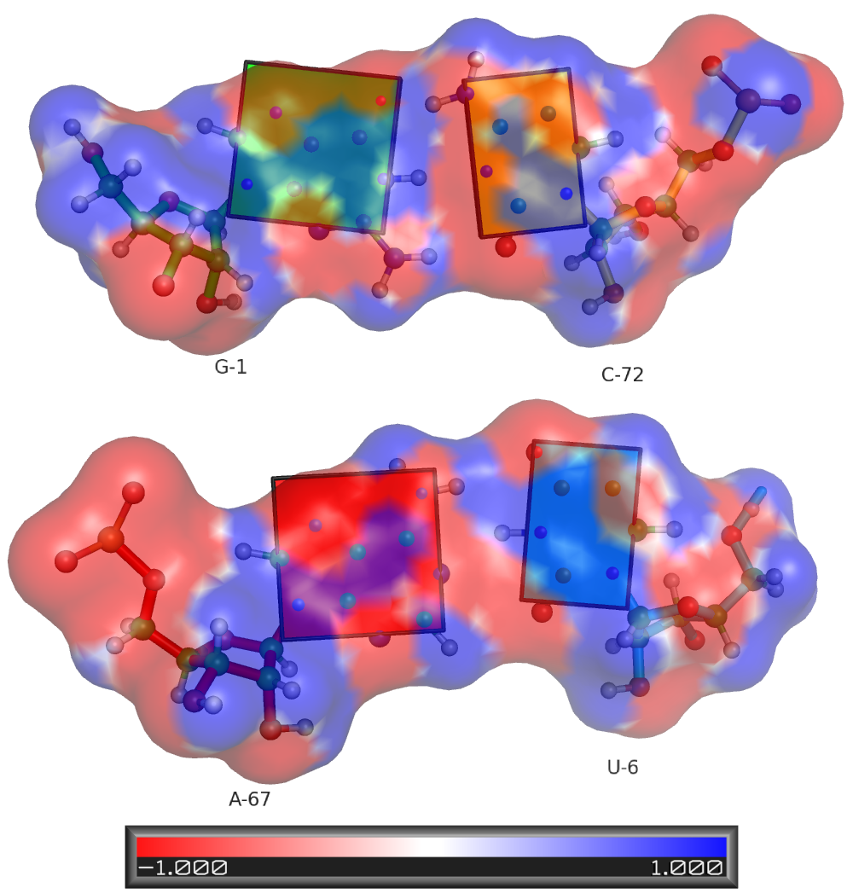

APBS Tutorial for the Olson Group
The first step to use apbs is to modify your existing pdb files into the format that apbs likes,
this format is called pqr. The people at Baker's lab provide a python script to do this job
automatically. The script is called pdb2pqr.py. I usually invoke it in the following way:
bash-3.1$ pdb2pqr.py --ff=amber rna1.pdb rna1.pqr
Then I use pymol and use the apbs gui that they have and do the calculation using the pqr I've
created.
The resulting images follow:
